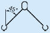
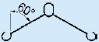

Seil-
Nenndurch-
messer
mm
strang
Neigungswinkeln von
mit Neigungswinkeln von


Anschlagseile, Litzenseile Normalausführung
Tragfähigkeiten für Anschlagseile mit Fasereinlagen für die Seilklassen 6×19 und 6×36 in Seilfestigkeitsklasse 1770 mit verpressten Seil-Endverbindungen in Anlehnung an DIN EN 13414-1: 2003+A2:2008.
Seil- Nenndurch- messer mm |
Tragfähigkeit in kg (direkt angeschlagen) | ||||
| Einzel- strang |
Doppelstrang mit Neigungswinkeln von |
Drei- und Vierstrang mit Neigungswinkeln von |
|||
| 0° bis 45° | 45° bis 60° | 0° bis 45° | 45° bis 60° | ||
 |
 |
||||
| 8 | 700 | 950 | 700 | 1 500 | 1 050 |
| 10 | 1 050 | 1 500 | 1 050 | 2 250 | 1 600 |
| 12 | 1 550 | 2 120 | 1 550 | 3 300 | 2 300 |
| 14 | 2 120 | 3 000 | 2 120 | 4 350 | 3 150 |
| 16 | 2 700 | 3 850 | 2 700 | 5 650 | 4 200 |
| 18 | 3 400 | 4 800 | 3 400 | 7 200 | 5 200 |
| 20 | 4 350 | 6 000 | 4 350 | 9 000 | 6 500 |
| 22 | 5 200 | 7 200 | 5 200 | 11 000 | 7 800 |
| 24 | 6 300 | 8 800 | 6 300 | 13 500 | 9 400 |
| 26 | 7 200 | 10 000 | 7 200 | 15 000 | 11 000 |
| 28 | 8 400 | 11 800 | 8 400 | 18 000 | 12 500 |
| 32 | 11 000 | 15 000 | 11 000 | 23 500 | 16 500 |
| 36 | 14 000 | 19 000 | 14 000 | 29 000 | 21 000 |
| 40 | 17 000 | 23 500 | 17 000 | 36 000 | 26 000 |
| 44 | 21 000 | 29 000 | 21 000 | 44 000 | 31 500 |
| 48 | 25 000 | 35 000 | 25 000 | 52 000 | 37 000 |
| 52 | 29 000 | 40 000 | 29 000 | 62 000 | 44 000 |
| 56 | 33 500 | 47 000 | 33 500 | 71 000 | 50 000 |
| 60 | 39 000 | 54 000 | 39 000 | 81 000 | 58 000 |
– Schnürgang von Seilen siehe hier! –
Ablegereife: Bei folgenden Schäden Seile nicht mehr benutzen:
Seilart |
Sichtbare Drahtbrüche bei Ablegereife auf einer Länge von | ||
| 3d | 6d | 30d | |
| Litzenseil*) N | 3 benachbarte Drähte einer Litze | 6 | 14 |
| Kabelschlagseil/Grummet**) K/G | 10 | 15 | 40 |